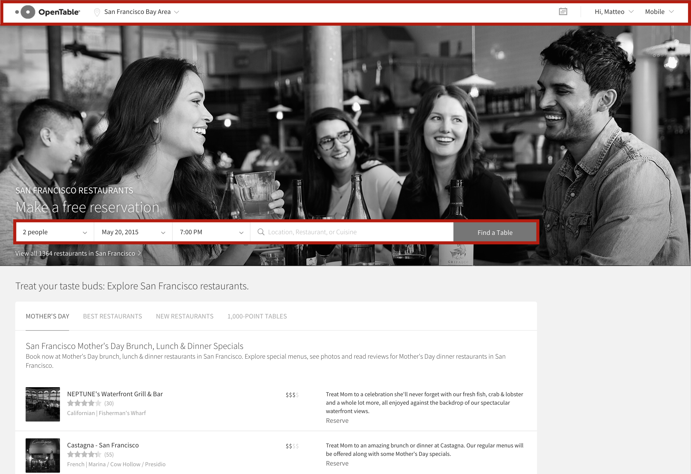
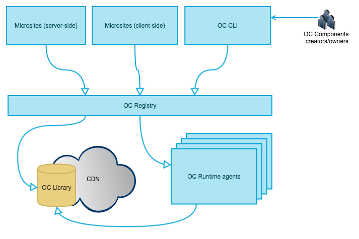

Hola!
@matteofigus

Europe, North and South America, Asia
millions of requests per minute
more than 50 engineers make changes every day to www.opentable.com
Microsites

www.opentable.com/san-francisco-restaurants
- "start" microsite
- San Francisco metro
- => http://start-123/?domain=com&metro=4
Microsites
- Team of 2 to 4 full-stack developers
- Minimal complexity
- Minimal dependencies
- Easier to test, maintain, extend
- Multiple daily deployments
- Ownership
The common parts

The common parts
Microsite rendering (server-side)
- http://search-456/?metro=4&dateTime=2015-10-23T19:00
- Execute logic
- GET shared components from Components API
<html>
<head>
<!-- css component -->
<!-- js head component -->
...
</head>
<body>
<!-- header component -->
...
<!-- footer component -->
<!-- js body component -->
...
</body>
</html>
Components for common UI elements
$ curl http://components-789/header/1.X.X/?userType=Admin&metroId=72 -H Accept-Language:en-US
{
"href": "http://components-789/header/1.X.X?userType=Admin&metroId=72",aefaef
"html": "<div><img src=\"//srs.opentable.com/logo.jpg\" />...</div>"
}
Microsites + Shared components
Consistency
Coordination
Optimal front-end loading
Easy to spin-up new microsites
github.com/opentable/oc
Getting started
$ npm install -g oc
$ mkdir demo && cd demo
$ oc init test-component jade
$ echo 'div this is my component' > test-component/template.jade
$ oc dev . 3030
$ oc preview http://localhost:3030/test-component
Ship it!
$ oc registry add http://oc-registry.herokuapp.com
$ oc publish /test-component
$ oc preview http://oc-registry.herokuapp.com/test-component
Static resources? Let me handle this!
// template.jade
img(src=staticPath+'img/img.jpg')
// server.js
module.exports.data = function(context, cb){
cb(null, {
staticPath: context.staticPath
});
};
Server-side rendered components
$ curl http://oc-registry.com/hello-world
{
"href": "https://oc-registry.com/hello-world",
"version": "1.0.0",
"requestVersion": "",
"html": "<div>hello John Doe</div>",
"type": "oc-component",
"renderMode": "rendered"
}Client-side rendering
<html>
<body>
...
<oc-component href="http://oc-registry.com/component/1.X.X/?a=b">
</oc-component>
...
<script src="http://oc-registry.com/oc-client/client.js">
</script>
</body>
</html>
Server-side pre-rendered components
$ curl http://oc-registry.com/hello-world
-H Accept:application/vnd.oc.unrendered+json
{
"href": "https://oc-registry.com/hello-world",
"version": "1.0.0",
"requestVersion": "",
"data": {
"name": "John doe"
},
"template": {
"src": "https://s3.amazonaws.com/your-s3-bucket/components/hello-world/1.0.0/template.js",
"type": "handlebars",
"key": "cad2a9671257d5033d2abfd739b1660993021d02"
},
"type": "oc-component",
"renderMode": "unrendered"
}Server-side rendering with node.js
npm install oc-client --save
var Client = require('oc-client'),
client = new Client({
registries: ['http://oc-registry.com/'],
components: {'hello-world': '~1.0.0'}
});
client.renderComponent('hello-world', function(err, componentHtml){
console.log(componentHtml); // => rendered html
});
Features
Enables people to create new components independently and publish them
Granular ownership
Performances
Robustness
Serve as framework for experimenting and A/B testing new ideas in the front-end
Microsites have control
Microservices / Microsites / Microteams
- Minimal dependencies
- Minimal complexity
- Closer to Business
- Empowered to handle ownership
- Optimised for resilience
- Optimised for destroyability
Conclusions
SOA is not just about code
Test, test, test
Failure is a feature
Componentise all the web!